Schede didattiche Storia e società
2365 schede didattiche in italiano sul tema «Storia e società»: testo con spazi vuoti, comprensione all'ascolto e crucipuzzle, da stampare (PDF) con soluzioni.
2.365 materiali
Classe

Seaborgio – Scheda didattica classe quarta e quinta: testo con spazi vuoti e crucipuzzle

Sci – Scheda didattica classe quarta e quinta: testo con spazi vuoti e crucipuzzle

Santa Sofia – Scheda didattica classe quarta e quinta: testo con spazi vuoti e crucipuzzle

San Valentino – Scheda didattica classe quarta e quinta: testo con spazi vuoti e crucipuzzle

San Pietroburgo – Scheda didattica classe quarta e quinta: testo con spazi vuoti e crucipuzzle

Salto con gli sci – Scheda didattica classe quarta e quinta: testo con spazi vuoti e crucipuzzle
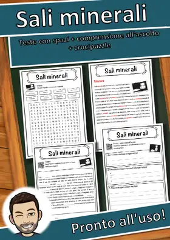
Sali minerali – Scheda didattica classe quarta e quinta: testo con spazi vuoti e crucipuzzle
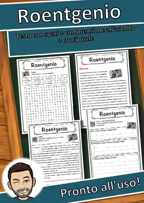
Roentgenio – Scheda didattica classe quarta e quinta: testo con spazi vuoti e crucipuzzle
Corteccia – Scheda didattica classe quarta e quinta: testo con spazi vuoti e crucipuzzle
Riciclaggio di denaro – Scheda didattica classe quarta e quinta: testo con spazi vuoti e crucipuzzle
Repubblica del Congo – Scheda didattica classe quarta e quinta: testo con spazi vuoti e crucipuzzle
Realismo – Scheda didattica classe quarta e quinta: testo con spazi vuoti e crucipuzzle
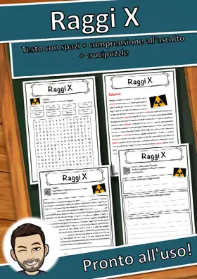
Raggi X – Scheda didattica classe quarta e quinta: testo con spazi vuoti e crucipuzzle
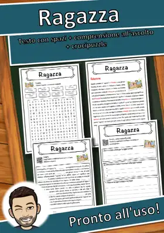
Ragazza – Scheda didattica classe quarta e quinta: testo con spazi vuoti e crucipuzzle
Parallelo – Scheda didattica classe quarta e quinta: testo con spazi vuoti e crucipuzzle
Papa – Scheda didattica classe quarta e quinta: testo con spazi vuoti e crucipuzzle
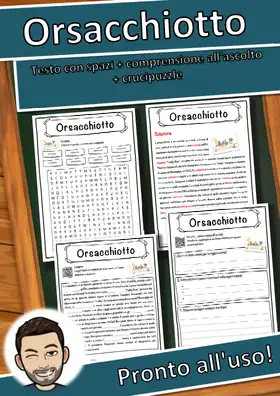
Orsacchiotto – Scheda didattica classe quarta e quinta: testo con spazi vuoti e crucipuzzle
Orrore – Scheda didattica classe quarta e quinta: testo con spazi vuoti e crucipuzzle
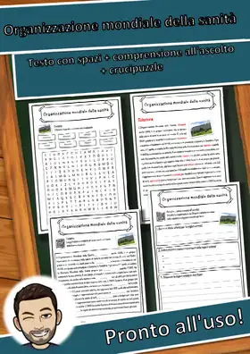
Organizzazione mondiale della sanità – Scheda didattica classe quarta e quinta: testo con spazi vuoti e crucipuzzle
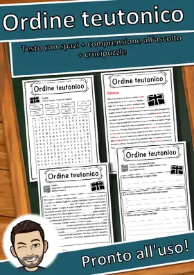
Ordine teutonico – Scheda didattica classe quarta e quinta: testo con spazi vuoti e crucipuzzle
Occhio – Scheda didattica classe quarta e quinta: testo con spazi vuoti e crucipuzzle
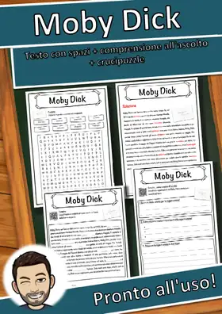
Moby Dick – Scheda didattica classe quarta e quinta: testo con spazi vuoti e crucipuzzle

Xilofono – Scheda didattica classe quarta e quinta: testo con spazi vuoti e crucipuzzle

Wilderness – Scheda didattica classe quarta e quinta: testo con spazi vuoti e crucipuzzle

Walhalla – Scheda didattica classe quarta e quinta: testo con spazi vuoti e crucipuzzle

Vorarlberg – Scheda didattica classe quarta e quinta: testo con spazi vuoti e crucipuzzle
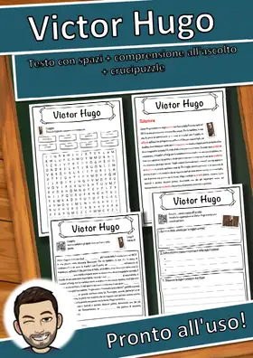
Victor Hugo – Scheda didattica classe quarta e quinta: testo con spazi vuoti e crucipuzzle
Vichinghi – Scheda didattica classe quarta e quinta: testo con spazi vuoti e crucipuzzle
Ventriloquo – Scheda didattica classe quarta e quinta: testo con spazi vuoti e crucipuzzle
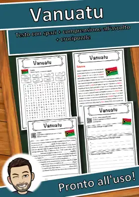
Vanuatu – Scheda didattica classe quarta e quinta: testo con spazi vuoti e crucipuzzle
Impresa – Scheda didattica classe quarta e quinta: testo con spazi vuoti e crucipuzzle
Vampiro – Scheda didattica classe quarta e quinta: testo con spazi vuoti e crucipuzzle
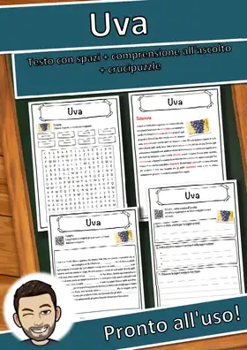
Uva – Scheda didattica classe quarta e quinta: testo con spazi vuoti e crucipuzzle
Umanesimo – Scheda didattica classe quarta e quinta: testo con spazi vuoti e crucipuzzle
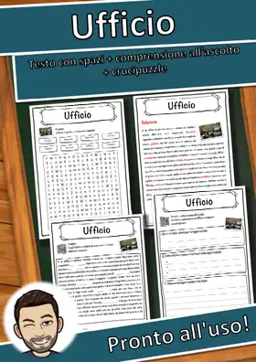
Ufficio – Scheda didattica classe quarta e quinta: testo con spazi vuoti e crucipuzzle
Matrimonio – Scheda didattica classe quarta e quinta: testo con spazi vuoti e crucipuzzle
Magnete – Scheda didattica classe quarta e quinta: testo con spazi vuoti e crucipuzzle
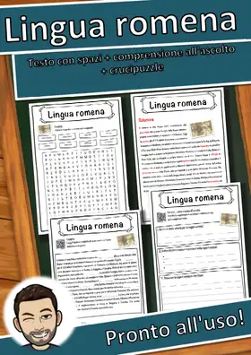
Lingua romena – Scheda didattica classe quarta e quinta: testo con spazi vuoti e crucipuzzle
Irlanda – Scheda didattica classe quarta e quinta: testo con spazi vuoti e crucipuzzle
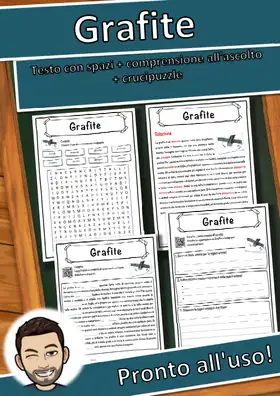
Grafite – Scheda didattica classe quarta e quinta: testo con spazi vuoti e crucipuzzle
Gomma per cancellare – Scheda didattica classe quarta e quinta: testo con spazi vuoti e crucipuzzle
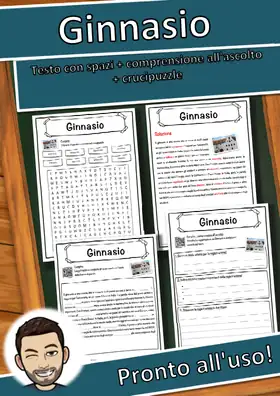
Ginnasio – Scheda didattica classe quarta e quinta: testo con spazi vuoti e crucipuzzle
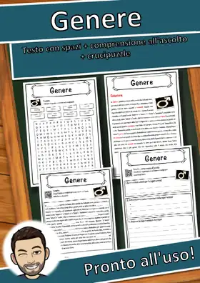
Genere – Scheda didattica classe quarta e quinta: testo con spazi vuoti e crucipuzzle
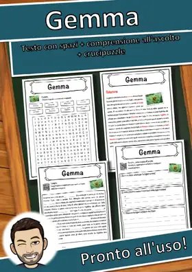
Gemma – Scheda didattica classe quarta e quinta: testo con spazi vuoti e crucipuzzle

Fegato – Scheda didattica classe quarta e quinta: testo con spazi vuoti e crucipuzzle

Etiopia – Scheda didattica classe quarta e quinta: testo con spazi vuoti e crucipuzzle

Eruzione vulcanica – Scheda didattica classe quarta e quinta: testo con spazi vuoti e crucipuzzle

Economia – Scheda didattica classe quarta e quinta: testo con spazi vuoti e crucipuzzle
Nessun materiale trovato: prova con un'altra parola o un altro filtro.